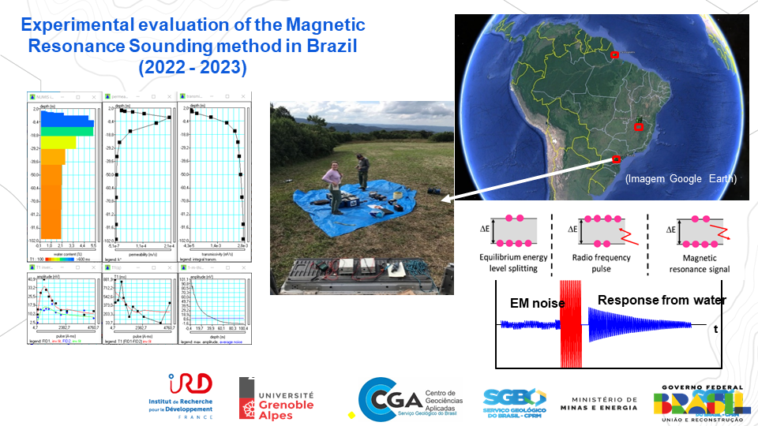

Experimental evaluation of the Magnetic Resonance Sounding method in Brazil (2022 - 2023) - Report

Resumo em Português
No âmbito dos programas educacionais e de colaboração, a Universidade Grenoble Alpes (UGA), o Instituto de Pesquisa Francês para o Desenvolvimento Sustentável (IRD) e o Centro de Geociências Aplicadas do Serviço Geológico do Brasil (CGA/SGB) organizaram uma escola de treinamento de campo no Brasil. Este trabalho foi realizado em colaboração com o Instituto Federal de Educação do Estado do Amapá (IFAP), o Instituto de Pesquisas Científicas e Tecnológicas do Estado do Amapá (IEPA) e a Universidade de São Paulo (USP). O programa de treinamento foi focado no uso do método de Sondagem por Ressonância Magnética (MRS) sob condições brasileiras. Entre julho e agosto de 2023, foram realizados estudos de campo com o MRS em diferentes contextos geológicos do Brasil. Os resultados são considerados positivos e, durante a sessão de treinamento, os participantes brasileiros adquiriram a experiência necessária no uso do MRS.Neste relatório, apresentamos os resultados de campo que demonstram o desempenho do MRS nas áreas investigadas, caracterizadas por um baixo campo geomagnético. Outros locais estão sob investigação nos estados do Paraná e de São Paulo, enquanto o equipamento permanece no Brasil até o final de setembro. Todas as áreas investigadas serão objeto de um relatório abrangente e de publicação em um periódico indexado.